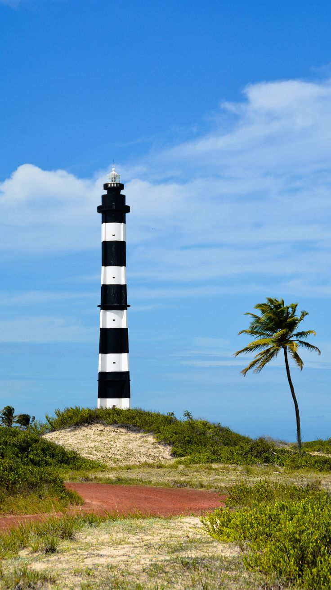

O Farol de Touros, também conhecido como Farol do Calcanhar, está localizado na Praia do Calcanhar, a 86 km de Natal, no estado do Rio Grande do Norte. Com 62 metros de altura e 298 degraus, é o segundo maior farol do Brasil, com um alcance luminoso de até 22 milhas náuticas (aproximadamente 132 km).
O farol foi construído em 1912 e, após reformas, passou a servir também para aviadores. Atualmente, é um importante símbolo cultural e turístico, reconhecido como patrimônio histórico e turístico do município de Touros. O farol foi construído em 1912 e, após reformas, passou a servir também para aviadores. Atualmente, é um importante símbolo cultural e turístico, reconhecido como patrimônio histórico e turístico do município de Touros.
localização:
 Voltar ao inicio
Voltar ao inicio